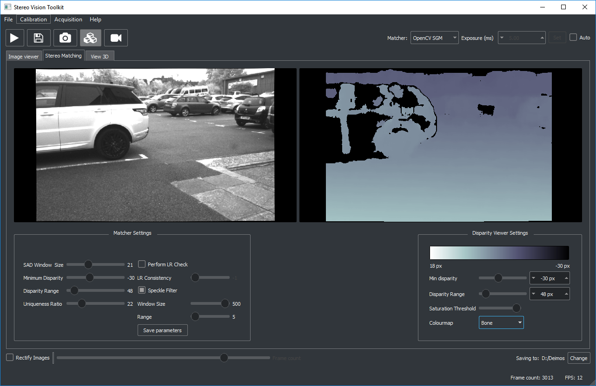

I3DR's stereo vision toolkit is an application provided for testing of stereo cameras and gathering of 3D data.
You can calibrate stereo cameras, acquire images and perform matching and 3D reconstruction. You can save raw stereo video to capture a scene and then replay it in the software to fine tune matching parameters.
SVTK is under active development. At the moment the software only officially supports the i3DR Deimos and Phobos cameras, but in principle any pre-rectified stereo video of the correct format (side-by-side) will work.
Currently, SVTK is a useful and functional tool for exploring stereo imaging, and allows you to get going with your I3DR stereo camera quickly. There are a number of features/improvements in development including:
We have included support for two of OpenCV's matchers: the basic block matcher and semi-global block matching. The block matcher will run at over 60fps on a fast CPU (e.g. i5.) SGBM should provide better results, but will run around a factor of five slower.

I3DR's own 3D matching algorithm can be built into this application however the files required are not included in this repository. This because it uses proprietary libraries owned by I3DR. For this reason, these files cannot be open source and are kept in a seperate private git repository. However, the 'pro' version of the software with these tool included will be included in 'Releases' but a license will be required from I3DR for this to run. Please contact bknight@i3drobotics.com for more information.
The software has three tabs: image acquisition, stereo matching and 3D visualisation. This is a typical stereo pipeline: images are acquired, optionally rectified, matched and then projected to 3D. You can save images, disparity maps and point clouds (to PLY format). Disparity maps are saved as 16-bit integer images for convenience, so divide by 256 to get sub-pixel measurements.
The project uses OpenCV for image processing, PCL and VTK for point cloud visualisation and hidapi for camera control. PCL requires Boost and Eigen which are included here. These dependencies are provided in accordance with their respective licenses which may be found in the license folder. We also use FontAwesome for icons via QtAwesome, along with QDarkStyle.
There is limited usage of CUDA for certain image processing steps (e.g. rectification).
This application is under active development and it is likely that in the short term there may be breaking changes to classes, or significant changes to the GUI. Documentation will follow shortly. Have a look at the project milestones for more information.
Feel free to check it out on GitHub to dig deeper: https://github.com/i3drobotics/stereo-vision-toolkit
This application is provided under the MIT license, which essentially means it's open-source, but we require you to add our copyright if you distribute it elsewhere.